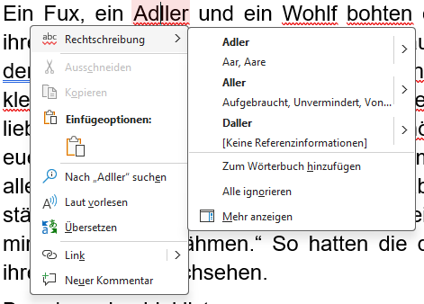

Kontextmenü-Optionen bei Rechtschreibfehlern
Wenn Microsoft Word einen potenziellen Rechtschreibfehler in Ihrem Dokument findet, bietet es verschiedene Optionen im Kontextmenü an, um Ihnen bei der Korrektur zu helfen. Diese Optionen sind nützlich, um schnell auf Fehler zu reagieren und die Qualität Ihres Textes zu verbessern.
Diese Optionen haben Sie im Kontextmenü
- Korrekturvorschläge: Word zeigt eine Liste von Vorschlägen zur Korrektur des erkannten Fehlers an. Sie können einen dieser Vorschläge auswählen, um den Fehler sofort zu korrigieren.
- „Zum Wörterbuch hinzufügen“: Wenn das markierte Wort tatsächlich korrekt ist und Sie möchten, dass Word es zukünftig als korrekt erkennt, können Sie es zum Wörterbuch hinzufügen. Dadurch wird es bei zukünftigen Prüfungen nicht mehr als Fehler markiert.
- „Alle ignorieren“: Wenn Sie der Meinung sind, dass das markierte Wort korrekt ist, können Sie diese Option wählen, um Word anzuweisen, den vermeintlichen Fehler jetzt und zukünftig zu ignorieren.
- „Mehr anzeigen“: DWenn Sie der Meinung sind, dass das markierte Wort korrekt ist, können Sie diese Option wählen, um Word anzuweisen, den vermeintlichen Fehler jetzt und zukünftig zu ignorieren.
Durch die Nutzung dieser Optionen können Sie effizient auf Rechtschreibfehler reagieren und sicherstellen, dass Ihr Dokument professionell und fehlerfrei bleibt. Es ist wichtig, diese Werkzeuge zu kennen und richtig einzusetzen, um die Qualität Ihrer Texte zu verbessern.
